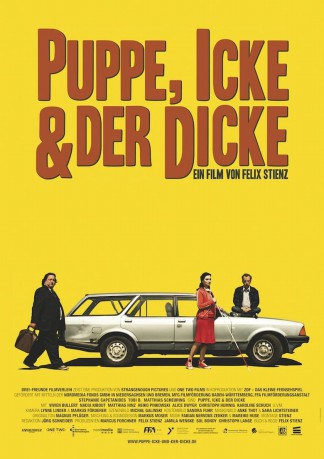

#11474 Puppe, Icke & der Dicke
 
 IMDB-Wertung: 6.4 / 10
IMDB-Wertung: 6.4 / 10  Metascore: 0
Metascore: 0 
Eine lebensfrohe, blinde Pariserin mit dem weltoffenen Namen Europe hat soeben erfahren, dass sie ein Baby bekommt. Doch wer ist der Vater des Kindes? Ihre Befürchtung wird wahr, als sie herausfindet, dass es Matthias ist. Europe hat ihn in Berlin kennengelernt, ein One-Night-Stand mit weitreichenden Folgen.Außer dem Kind ist Europe nur noch ein Polaroidfoto geblieben. Sie beschließt, ihrem Traum hinterherzujagen, Matthias zu finden und mit ihm glücklich zu werden. Auf ihrer Reise nach Berlin trifft sie den kleinwüchsigen Kurierfahrer Bomber sowie auf Bruno. Während der Ur-Berliner Bomber gerade seinen Job verloren hat und aus Frust beschließt, seine letzte Lieferung zu verhökern, befindet sich der herzensgute Bruno auf Spurensuche in seine Vergangenheit. Zu dritt und mit jeweils unterschiedlichen Motiven macht sich das ungleiche Dreiergespann auf in die Hauptstadt...
Jahr: 2012
Dauer: 87 Minuten
FSK: 6
Land: Deutschland Studio: Drei Freunde FilmverleihTonspuren: - , - ,
Untertitel:
Auflösung: 1080p (1920x1040) Größe: 6533 MB
Genre: Komödie
Regisseur: Felix Stienz
Drehbuch: Felix Stienz, Georg Struck
Soundtrack:
Darsteller:
- Alice Dwyer als Kellnerin
- Yann Grouhel als Ivo
- Nadia Kibout als Eva
 Heiko Pinkowski als Bombers Chef / Müllabfuhr Stefan
Heiko Pinkowski als Bombers Chef / Müllabfuhr Stefan- Stéphanie Capetanidés als Europe
- Tobi B. als Bomber
- Matthias Scheuring als Bruno
- Nora Rim Abdel-Maksoud als Charlie
- Vivien Bullert als Vivien
- Till Butterbach als Gast ohne Gitarre
- Jasin Challah als Musiker vor Motel
- Deacon Dunlop als Malpi
- Axel Hartwig als Knarcksen
- Matthias Hinz als Matthias
- Mareike Hube als Malpi
- Christoph Humnig als Gast mit Gitarre
- Maluse Konrad als Betty B.
- Chrisi Molt als Malpi
- Fabian Nervous Zenker als Malpi
 Karoline Schuch als Fahrerin
Karoline Schuch als Fahrerin- Mark Sternkiker als Beifahrer
- Oliver Theurich als Partygast (uncredited)
Datei: X:\2012(N-Z)\Puppe, Icke & der Dicke (2012, FSK6, 1920x1040).mkv seit 13.07.2019
Festplatte: HD 2012(N-Z)-2013(A-H)
 Es gibt insgesamt 138 Filme in der Gruppe '2012(N-Z)'
Es gibt insgesamt 138 Filme in der Gruppe '2012(N-Z)'